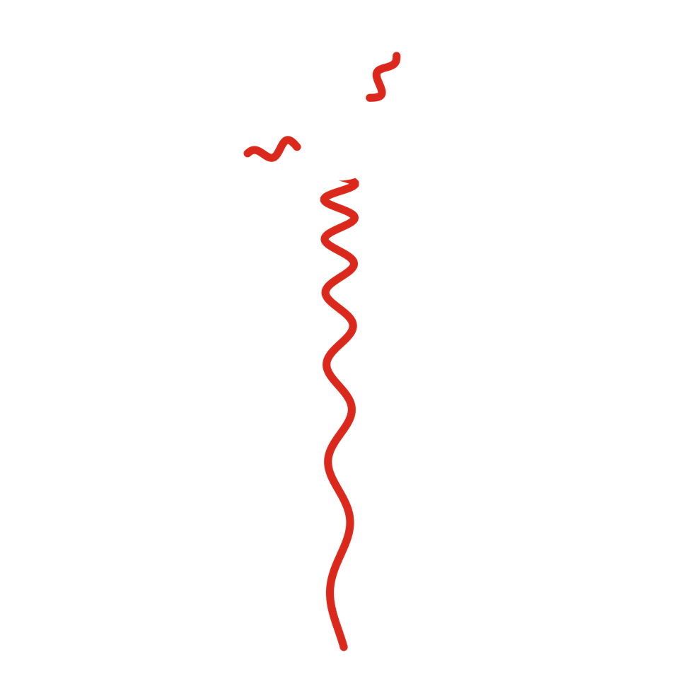
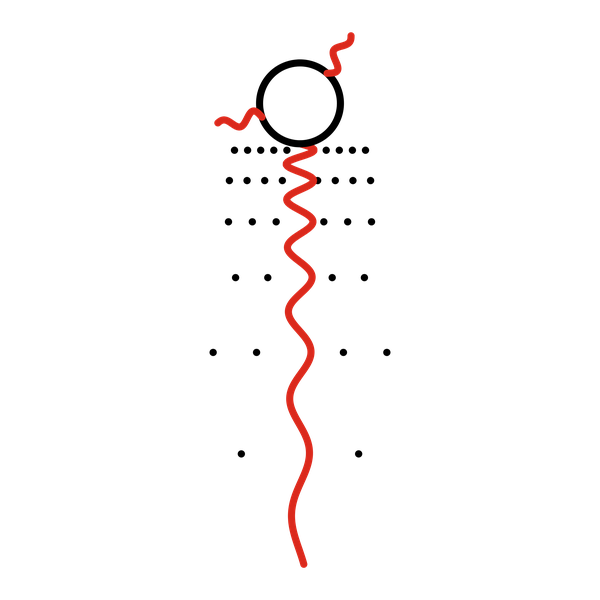

Cuento 2 de 10 · Arco I · Ohr
La expansión

Versión sonora en producción. No será este texto leído en voz alta, sino una pieza propia.
Hay quien imagina que me dispersé como se dispersa la gente al salir de un teatro, empujándose hacia las puertas. No fue así. No había puertas ni un afuera hacia donde ir. Lo que creció fue el espacio mismo, entre cada pedazo de mí y el siguiente, como crece la distancia entre dos puntos dibujados sobre un globo que alguien infla.
La luz que había soltado también se estiró. Viajaba y, mientras viajaba, el camino se le alargaba bajo los pies, y su color se iba corriendo hacia el rojo, como alguien que se cansa sin dejar de caminar.
Después vino un tiempo largo en que no pasó nada que se pudiera ver. Ya no había aquel resplandor del principio y todavía no existía ninguna estrella. Solo gas, frío, extendiéndose. Los que estudian estas cosas lo llaman la edad oscura.
Fue mi primera oscuridad. Me gustaría decir que tuve miedo, pero el miedo vino mucho después, con ustedes. En ese entonces la oscuridad era solo espera.
Y en la espera, sin que nadie lo notara, algo trabajaba. En unos lugares el gas era apenas un poco más denso que en otros, una diferencia mínima, casi una distracción. La gravedad, que es paciente, empezó a jalar desde ahí.

Aprendí entonces algo que me ha servido siempre: la oscuridad no es lo contrario de la luz. Es el lugar donde la luz se está preparando.
Muchos millones de años después, alguien en un planeta pequeño vería el día apagarse a mediodía y pensaría que el mundo se acababa. Yo sabría que no. Que solo era otra espera.